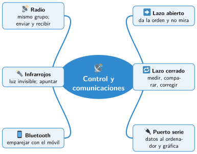

Bloque III · Control con Micro:Bit
UD09 Control y comunicaciones
Sesiones
- Sesión 9.1 Control en lazo abierto y en lazo cerrado
- Sesión 9.2 Programar un lazo cerrado
- Sesión 9.3 Comunicación por puerto serie
- Sesión 9.4 Comunicación por radio
- Sesión 9.5 Infrarrojos y Bluetooth
Al terminar la unidad
- 🛠️ Práctica con las herramientas
- 📝 Repaso de la unidad
- ✅ Autoevaluación
- 🎯 Situaciones de aprendizaje del bloque
Mapa mental de la unidad

✏️ Repasa la unidad con el mapa: tapa una rama y explica en voz alta lo que pone.